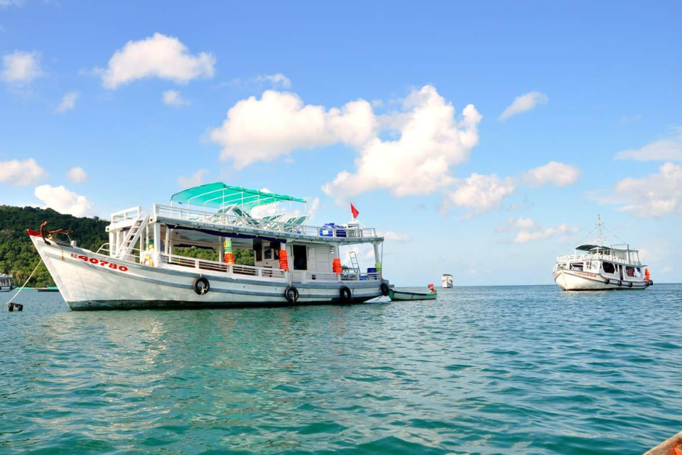
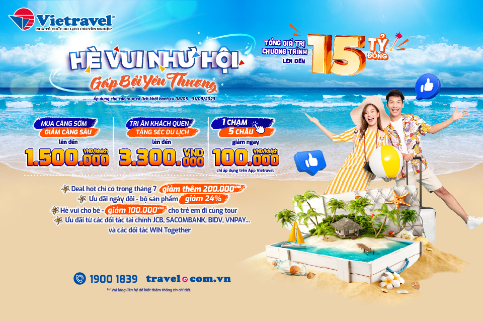
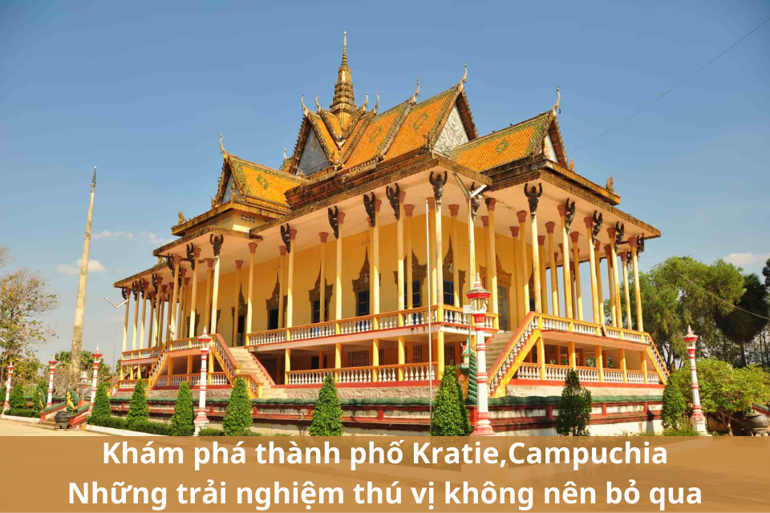

Tại sao tour câu mực đêm Phú Quốc lại được nhiều du khách săn đón đến vậy?
1. Tour câu mực đêm Phú Quốc với nhiều trải nghiệm khác biệt
Đầu tiên phải kể đến trải nghiệm có một không hai khi đi tour câu mực đêm Phú Quốc là được ngắm hoàng hôn rực rỡ, đẹp đẽ. Đi tour du lịch Phú Quốc, đặc biệt là tour câu mực đêm, du khách sẽ có cơ hội ngắm hoàng hôn trên biển vô cùng lãng mạn. Nếu may mắn đi biển vào những ngày trời có nhiều sao thì khung cảnh càng hấp dẫn hơn bao giờ hết. Cảm giác được đứng giữa biển khơi rộng lớn, ngắm nhìn mặt trời đang từ từ lặn xuống, cùng không gian rực hồng của những ánh hoàng hôn, quả thực là một trải nghiệm hết sức tuyệt vời. Vì vậy, du khách nên mang theo máy ảnh, smartphone và nhớ là phải sạc đầy pin để ghi lại những hình ảnh đẹp của biển đảo Phú Quốc vào chiều hoàng hôn nhé.
Sau khi ngắm hoàng hôn, cũng là lúc màn đêm dần buông xuống, hoạt động câu mực được bắt đầu diễn ra. Và tất nhiên, sau quá trình lao động miệt mài, bạn sẽ được thưởng thức đặc sản mực tươi ngon do chính tay mình câu được và đặc biệt hơn là được thưởng thức món ngon ngay trên tàu. Giữa biển trời mênh mông, gió biển mát lạnh, thưởng thức một bát mì mực hay cháo mực tươi thì không gì tuyệt vời hơn Hơn thế nữa, nếu câu được nhiều mực, du khách còn có thể mang về đất liền làm quà. Đó cũng chính là lý do mà tour câu mực đêm Phú Quốc rất được du khách ưa chuộng nhất hiện nay.
Cuối cùng, điều để lại ấn tượng sâu sắc nhất trong lòng du khách khi tham gia câu mực đêm đó chính là, cảm giác như du khách được trở thành một ngư dân đích thực đi câu mực ở Phú Quốc vậy, đây là trải nghiệm hết sức thú vị, mà không phải ai cũng có cơ hội được thử. Bạn sẽ được những ngư dân có kinh nghiệm chia sẻ về cách chọn mồi, săn mực, rèn luyện tính kiên trì, được tự tay đánh bắt những con mực tươi ngon và cảm nhận được niềm vui, niềm tự hào cũng như sự vất vả của cuộc sống những ngư dân Phú Quốc sau một ngày dài lênh đênh trên biển.
2. Tour câu mực đêm Phú Quốc luôn có mức giá phải chăng
Không chỉ có nhiều trải nghiệm hấp dẫn, mà tour câu mực đêm còn có nhiều lựa chọn về điểm đến cũng như giá cả để du khách có thể chọn lựa dễ dàng. Thông thường, câu mực Phú Quốc là hoạt động có thể thực hiện ở bất kỳ đâu trên đảo ngọc, vị trí câu gần bờ. Vì vậy, có rất nhiều khách sạn lưu trú cho du khách lựa chọn khi muốn trải nghiệm dịch vụ nghỉ dưỡng đẳng cấp kết hợp với tour câu mực đêm đầy hấp dẫn.
Cùng với đó, hoạt động này chỉ cần một mức chi phí phải chăng.
Ở Phú Quốc, có các tour câu mực ngắm hoàng hôn được tổ chức hằng ngày nên bạn có thể dễ dàng đăng ký một tour để trải nghiệm. Bạn có thể cùng Vietravel đồng hành trong tour câu mực đêm Phú Quốc (1 ngày) để có những trải nghiệm độc đáo chỉ với 250.000 đồng/khách. Bạn sẽ được tự do trải nghiệm hết các dịch vụ mà không cần lo thêm bất kỳ chi phí phát sinh nào khác.
Còn đối với các nhóm du lịch tự túc, bạn cũng có thể tham khảo và đăng ký tour với các nhà cung cấp dịch vụ khác mức giá khoảng 280.000 đồng/khách. Và bạn sẽ ghép đoàn với những đoàn khác.
Đối với các nhóm đông người, giá đoàn riêng sẽ là 800.000 đồng/khách có phí hướng dẫn viên.
Bạn chỉ bỏ ra số chừng ấy số tiền, mà những trải nghiệm mang về đặc biệt như vậy, chắc chắn bạn đang được hời rất nhiều.
Quả thực, những trải nghiệm trong hoạt động của tour câu mực đêm Phú Quốc rất đáng để thử một lần trong đời, chắc chắn những trải nghiệm của bạn trên con tàu ấy sẽ là một trong những kỷ niệm đẹp nhất trong cuộc đời bạn.

Khuyến mãi chào Hè 2023: “Hè vui như hội - Gấp bội yêu thương” cùng Vietravel
“Hè vui như hội, gấp bội yêu thương” và hàng loạt khuyến mãi khủng
● Đăng ký tour trong nước từ ngày 6/4 - 31/5/2023 khách hàng sẽ nhận được ưu đãi: giảm đến 300.000 đồng/khách đối với nhóm từ 4 - 6 khách; giảm đến 500.000 đồng/khách đối với nhóm từ 7 - 9 khách; giảm đến 700.000 đồng/khách đối với nhóm từ 10 khách trở lên. Đăng ký tour trong nước từ ngày 1/6 - 31/8/2023 sẽ nhận ưu đãi: giảm đến 200.000 đồng/khách cho nhóm từ 4 - 6 khách; giảm đến 300.000 đồng/khách cho nhóm từ 7 - 9 khách; giảm đến 400.000 đồng/khách đối với nhóm từ 10 khách trở lên.
● Đăng ký tour nước ngoài từ ngày 6/4 - 31/5/2023 sẽ nhận ưu đãi: giảm đến 1 triệu đồng/khách với nhóm từ 4 - 6 khách; giảm đến 1,2 triệu đồng/khách cho nhóm từ 7 - 9 khách; giảm đến 1,5 triệu đồng/khách cho nhóm từ 10 khách trở lên. Đăng ký tour từ ngày 1/6 - 31/8/2023 khách hàng sẽ nhận mức ưu đãi: giảm đến 600.000 đồng/khách cho nhóm từ 4 - 6 khách; giảm đến 800.000 đồng/khách cho nhóm từ 7 - 9 khách; giảm đến 1 triệu đồng/khách cho nhóm từ 10 khách trở lên.
(Lưu ý: Áp dụng 100% cho dòng tour cao cấp, tiêu chuẩn, áp dụng 50% cho dòng tour tiết kiệm, các dòng tour còn lại không áp dụng.)

Khám phá thành phố Kratie, Campuchia: Những trải nghiệm thú vị không nên bỏ qua
1. Chiêm ngưỡng cá heo sông MeKong tuyệt đẹp
Một trong những trải nghiệm tuyệt vời nhất dành cho du khách khi đến với thành phố Kratie, Campuchia chính là ngắm nhìn những chú cá heo sông MeKong đang bơi lội và nhảy múa trên dòng sông Mekong. Đây là loài cá heo nước ngọt quý hiếm đang đứng trên bờ tuyệt chủng, chỉ còn lại vài cá thể ít ỏi.
Điểm ngắm cá heo đẹp nhất là từ Krampi, nằm cách Kratie 20km. Tại đây, du khách có thể thuê một chiếc thuyền với giá cực kỳ hợp lý để có thể thưởng thức khoảnh khắc tuyệt vời đó. Trên thuyền, bạn sẽ được chiêm ngưỡng những chú cá heo quý hiếm và cảnh quan tuyệt đẹp của dòng sông Mekong.
Không chỉ có việc ngắm cá heo, Kratie còn cho phép du khách khám phá các ngôi làng dọc theo sông Mekong. Bằng cách thuê một chiếc tay ga hay xe máy, bạn có thể tự do khám phá mà không cần phải lên kế hoạch quá nhiều. Nếu cần thông tin, hầu hết các nhà nghỉ ở Kratie đều có sẵn để giúp du khách biết thêm về khu vực và những điểm đến thú vị. Bên cạnh đó, cư dân tại đây cực kỳ thân thiện và luôn sẵn sàng giúp đỡ du khách khi cần thiết.
2. Thăm viếng chùa 100 cột
Nếu bạn muốn khám phá nhiều hơn về thành phố Kratie, đừng quên đến thăm ngôi chùa 100 cột nằm ở quận Sambor. Điều đặc biệt ở ngôi chùa này chính là có tới 100 cột được xây dựng từ đất sét và thạch cao. Để tới được đây, bạn có thể di chuyển khoảng 36km về phía Bắc từ trung tâm thị trấn Kratie. Chùa 100 cột là một địa điểm tham quan tuyệt vời để tìm hiểu về kiến trúc và lịch sử của vùng đất này. Bên cạnh đó, bạn cũng có thể cảm nhận được sự yên bình và thanh tịnh tại ngôi chùa này.
3. Chùa Phnom Sambok
Chùa Phnom Sambok là một địa điểm tôn giáo nổi tiếng tọa lạc tại tỉnh Kratie, Campuchia. Chùa nằm trên đỉnh núi Phnom Sambok, cách trung tâm thị trấn Kratie khoảng 11km. Chùa là một điểm đến phổ biến cho du khách nhờ vị trí đẹp và tầm nhìn đẹp tuyệt vời của vùng đồi núi xung quanh.
Để đến chùa, du khách phải đi bộ lên đỉnh núi bằng cầu thang, đi qua một khu rừng yên tĩnh và tiếng động của thiên nhiên. Chùa là một nơi đẹp và thanh bình, được trang trí bằng kiến trúc truyền thống của Campuchia, những họa tiết khắc trên đá phức tạp và những bức tranh màu sắc.
Chùa Phnom Sambok còn nổi tiếng với trường tu học đạo Phật. Du khách có thể quan sát cuộc sống hàng ngày của các vị sư, lắng nghe âm nhạc thiền của họ và tham gia các buổi tập thiền.
Đến thăm chùa Phnom Sambok là một cơ hội tuyệt vời để trải nghiệm vẻ đẹp và sự thanh bình của miền quê Campuchia, cũng như học hỏi về đạo Phật và vai trò của nó trong văn hóa Campuchia.
4. Thưởng thức các món ăn đặc sản tại thành phố Kratie
Nếu bạn là một tín đồ ẩm thực, thì chắc chắn bạn không thể bỏ qua cơ hội thưởng thức những món ăn đặc sản tại thành phố Kratie. Đến với Kratie, bạn sẽ được trải nghiệm những món ăn ngon và độc đáo như:
●Bánh ngô tươi nướng là một món ăn đặc trưng của Kratie. Bánh được làm từ ngô tươi, trộn đều với nước và đường rồi nướng trên than hoa cho đến khi có mùi thơm vàng rực. Khi ăn, bạn sẽ cảm nhận được vị ngọt thanh của ngô tươi kết hợp với vị béo của nước và đường
●Thịt trâu khô là một món ăn đặc sản có từ lâu đời tại Kratie. Thịt được phơi khô trên nắng và sau đó được nướng trên lửa than, tạo ra một vị giòn và mềm mại đặc trưng. Thịt trâu khô được ăn kèm với rau sống, bún tươi và nước chấm đặc biệt.
●Bò nướng là một món ăn đặc sản phổ biến tại Kratie. Bò được chọn từ những con bò tươi ngon và sau đó được nướng trên lửa than nóng bỏng. Khi ăn, bạn sẽ cảm nhận được vị thơm ngon của thịt bò kết hợp với gia vị đặc biệt tạo ra một hương vị đặc trưng của Kratie.